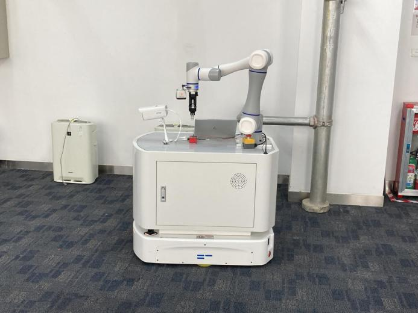

模型效率与边缘部署
具备模型量化、知识蒸馏及边缘设备部署经验，综合评估任务效果、推理延迟和资源占用，分析模型性能与部署效率之间的权衡。
具身智能 · VLA · 模型效率与部署
上海交通大学本科 信息工程电信科学技术研究院硕士在读 信息与通信工程 · 2027 届
围绕 VLA 模型适配、部署效率和真实机器人系统开展研究与实践。积累了从遥操作示教、数据处理、模型微调到真机执行的完整流程经验，关注模型机制与计算、控制和通信约束之间的联系。
求职方向：具身智能算法、VLA、机器人学习与模型部署相关岗位。
具备模型量化、知识蒸馏及边缘设备部署经验，综合评估任务效果、推理延迟和资源占用，分析模型性能与部署效率之间的权衡。
实践涉及 OpenVLA、π0.5、Octo、SmolVLA 等模型的监督微调与部署，围绕具体任务开展适配、对比实验和执行效果分析。
设计 SO101 遥操作示教与数采系统，开展数据采集、校验、回放和清洗；基于 LeRobot 推进 ACT 数据与控制链路验证。
具有机器人运动学和 SO101 约束层实践经验，结合控制链路与硬件条件分析策略执行问题，并开展真机实验与 DAgger 实践。
开展场景建模和仿真回放，使用 LIBERO、ManiSkill 等 benchmark；了解 MuJoCo、Isaac Sim，积累 ROS / Gazebo 系统集成经验。
采用过并行化、预处理优化等手段，从计算、数据处理与通信链路定位瓶颈，关注传输约束及信息传输理论上限对系统的影响。
具备深度学习、计算机视觉与机器人策略学习基础，常用 Python、PyTorch。工程实践涉及 Linux、Git、Docker、C++、LeRobot 和 ROS / Gazebo，熟悉了解 ROS / ROS2。
第一作者 · IEEE RA-L 在审 · 仿真评估
结合决策敏感路由、共享—专家码本和时空熵编码，分析 VLA 边云切分推理中的任务表现、通信量与部署计算开销。个人工作覆盖方案设计、训练、对比实验和代码实现。
方法图、实验数据与项目详情 → 模块结构 · 点击查看图表与评测条件 →
模块结构 · 点击查看图表与评测条件 →SmolVLA 真机抓取 · 双视角执行回放
实际软件界面 · 真实示教数据回放
MuJoCo · 已记录示教轨迹的仿真回放
RViz · A* 路径规划运行录屏
更多系统与评测实践：具身智能仿真平台研究与测试 · 5G-A 与工业智能应用研究
参与机器人系统功能验证、5G 柔性装配示范产线运维与测试，以及具身智能仿真平台和产业技术研究。

信息工程
信息与通信工程；于北京航空航天大学完成课程学习
重点学习 PPO、GRPO 等策略优化算法，梳理优势估计、奖励设计、策略更新和训练稳定性，关注这些机制在 VLA 后训练中的应用。
持续关注 Dreamer、TD-MPC2 等方法，系统梳理潜在动力学建模、想象轨迹生成，以及基于模型的规划与决策。
重视方法理解、实验验证与工程实现的结合，愿意主动学习新方法和工具。习惯利用 AI 工具与脚本减少重复工作，提高资料整理、学习和开发效率。